モデルの結合
このデモでは、単純な直列および並列接続から複雑なブロック線図まで、LTI システムの相互接続をモデルする方法を紹介します。
目次
概要
Control System Toolbox™ には、LTI モデルのネットワーク構築を支援するためのさまざまな関数が用意されています。これらの関数には、以下のような関数が含まれます。
- 直列および並列接続 (関数 series および parallel)
- フィードバック接続 (関数 feedback および lft)
- 入出力連結 (関数 [ , ]、[ ; ]、および append)
- 一般的なブロック線図構築 (関数 connect)
上記の関数は、モデル表現のあらゆる組み合わせを処理できます。例示のために、以下の 2 つの SISO 伝達関数モデルを作成します。
H1 = tf(2,[1 3 0])
Transfer function:
2
---------
s^2 + 3 s
H2 = zpk([],-5,5)
Zero/pole/gain: 5 ----- (s+5)
直列接続
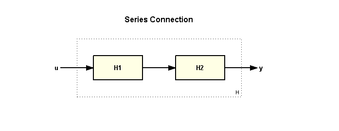
演算子 * または関数 series を使用して、以下のように LTI モデルを直列に接続します。
H = H2 * H1
Zero/pole/gain:
10
-------------
s (s+5) (s+3)
これと等価な関数は以下のとおりです。
H = series(H1,H2);
並列接続
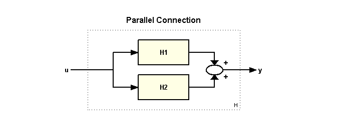
演算子 + または関数 parallel を使用して、以下のように LTI モデルを並列に接続します。
H = H1 + H2
Zero/pole/gain:
5 (s+2.643) (s+0.7566)
----------------------
s (s+3) (s+5)
これと等価な関数は以下のとおりです。
H = parallel(H1,H2);
フィードバック接続
標準のフィードバック構成は、以下のとおりです。
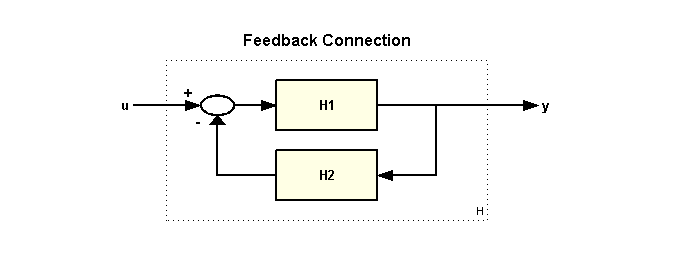
u から y への閉ループ伝達のモデルを構築するには、以下のように入力します。
H = feedback(H1,H2)
Zero/pole/gain:
2 (s+5)
--------------------------------
(s+5.663) (s^2 + 2.337s + 1.766)
関数 feedback は、既定の既定では負のフィードバックを前提としています。正のフィードバックを適用するには、以下の構文を使用します。
H = feedback(H1,H2,+1);
また、関数 lft を使用して、さらに一般的なフィードバック相互接続を以下のように構築することもできます。
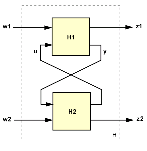
入出力の連結
H1 と H2 という 2 つのモデルの入力を連結するには、以下のように入力します。
H = [ H1 , H2 ]
Zero/pole/gain from input 1 to output: 2 ------- s (s+3) Zero/pole/gain from input 2 to output: 5 ----- (s+5)
結果として得られるモデルには、2 つの入力があり、以下の相互接続に対応しています。
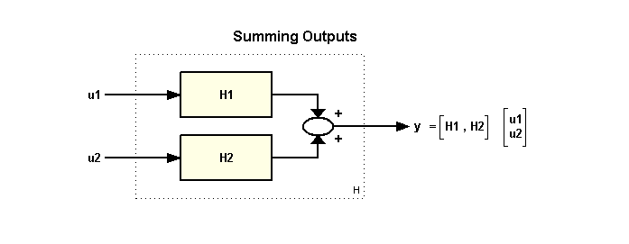
同様に、以下のように入力すると H1 と H2 という出力を連結できます。
H = [ H1 ; H2 ]
Zero/pole/gain from input to output...
2
#1: -------
s (s+3)
5
#2: -----
(s+5)
結果として得られるモデル H には、2 つの出力と 1 つの入力があり、以下のブロック線図に相当します。
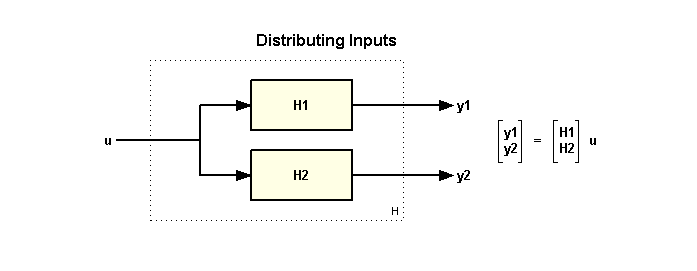
最後に、以下を使用して 2 つのモデルの入出力を追加します。
H = append(H1,H2)
Zero/pole/gain from input 1 to output...
2
#1: -------
s (s+3)
#2: 0
Zero/pole/gain from input 2 to output...
#1: 0
5
#2: -----
(s+5)
結果として得られるモデル H には、2 つの出力と 2 つの入力があり、以下のブロック線図に相当します。
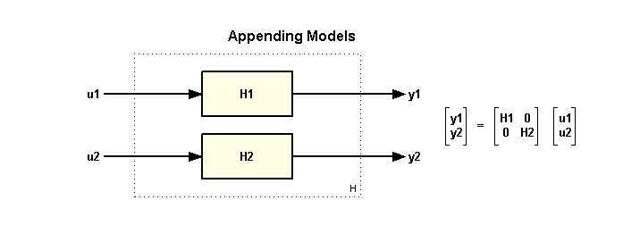
基本的名 SISO モデルから、結合を使用して MIMO モデルを以下のように構築できます。
H = [H1 , -tf(10,[1 10]) ; 0 , H2 ]
Zero/pole/gain from input 1 to output...
2
#1: -------
s (s+3)
#2: 0
Zero/pole/gain from input 2 to output...
-10
#1: ------
(s+10)
5
#2: -----
(s+5)
sigma(H), grid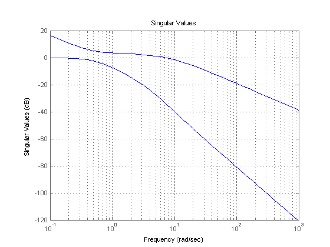
ブロック線図からのモデル構築
ここまでに紹介した関数と演算を組み合わせると、簡単なブロック線図のモデルを構築できます。たとえば、以下のブロック線図に
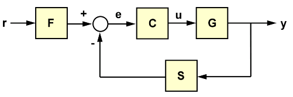
ブロック F、C、G、S の次のデータがあるとします。
s = tf('s');
F = 1/(s+1);
G = 100/(s^2+5*s+100);
C = 20*(s^2+s+60)/s/(s^2+40*s+400);
S = 10/(s+10);
閉ループ伝達関数 T を r から y まで以下のように計算できます。
T = F * feedback(G*C,S); step(T), grid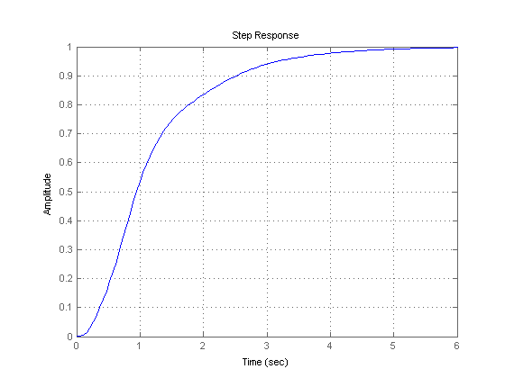
さらに複雑なブロック線図では、関数 connect を使用すると、系統的かつ簡単な方法でブロック同士を配線で結合できます。関数 connect を使用するには、以下の手順に従います。
- 加算ブロックも含め、ブロック線図内のすべてのブロックを定義する
- ブロック線図内のすべての信号に名前を付ける
- 信号名を使用して各ブロックの InputName および OutputName プロパティを指定する
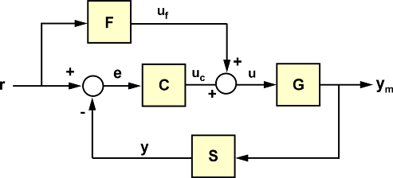
上記のブロック線図では、これらの手順は以下のようになります。
Sum1 = sumblk('e','r','y','+-'); Sum2 = sumblk('u','uC','uF','++'); % Define the block I/Os F.inputname = 'r'; F.OutputName = 'uF'; C.inputname = 'e'; C.OutputName = 'uC'; G.inputname = 'u'; G.OutputName = 'ym'; S.inputname = 'ym'; S.OutputName = 'y'; % Compute transfer r -> ym T = connect(F,C,G,S,Sum1,Sum2,'r','ym'); step(T), grid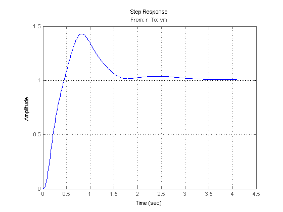
実行の優先順位
異なるタイプのモデルを接続する場合、結果として得られるモデル タイプは、実行の優先順位によって決まります。
FRD > SS > ZPK > TF
この規則では、優先順位は、FRD が最も高く、続いて SS、ZPK、そして TF は最も低くなります。たとえば、以下の並列接続では、
H1 = ss(-1,2,3,0); H2 = tf(1,[1 0]); H = H2 * H1;
H2 が自動的に状態空間表現に変換され、結果 H は以下の状態空間モデルとなります。
class(H)
ans = ss
SS および FRD 表現がシステム相互接続に最も適しているため、すべての計算がこれらの 2 つの表現のいずれかを使用して実行されるようにするために、最低でも 1 つのモデルを SS または FRD にキャストすることをお勧めします。たとえば、上記の T は、以下が最適な計算となります。
T = connect(ss(F),C,G,S,Sum1,Sum2,'r','ym');